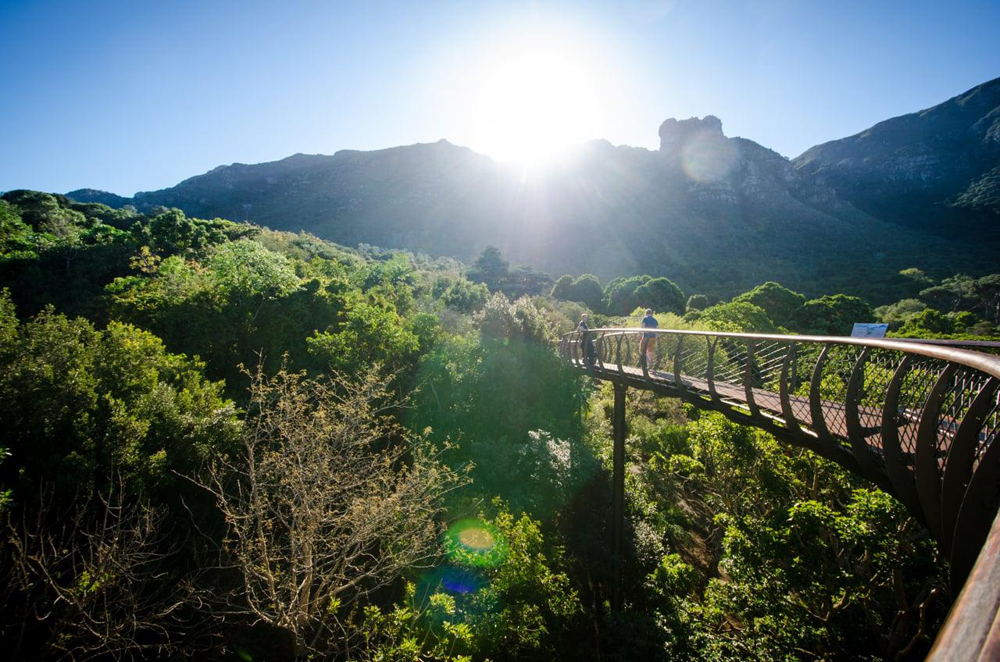

Cape Town, South Africa
Cape Town is a city with unrivalled culture and diversity, boasting a heady mix of old and new.
Nothing speaks to this more than the iconic Big Six attractions.
The Big Six is made up of Cape Point, Groot Constantia, Kirstenbosch, Robben Island Museum, Table Mountain
Ariel Cabelway and the V&A Waterfront.
These six spectacular Cape Town attractions are the city's backbone.
They represent the beautiful natural surrounds, rich history, diverse culture, and incredible suisine and
wine that make Cape Town a top destination for travellers from all over the world.
Table Mountain

Kirstenbosch National Botanical Garden
